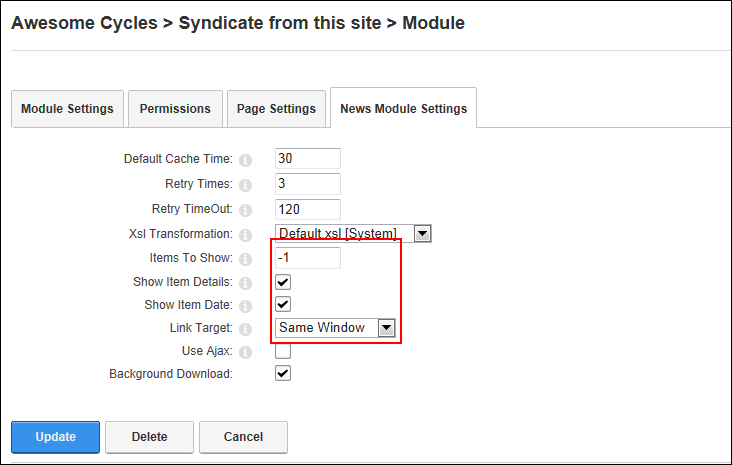

Setting the Number and Details of News Items
How to set the number of news items as well as the details of each news item displayed on the News Feeds (RSS) module. Note: "Show Item Details" and "Show Item Date" are passed as parameters to the XSL sheet. If you are using a custom XSL sheet and wish to use these parameters you have to include them on the sheet. See the default sheets for an example.
-
- Select the News Module Settings tab.
- In the Items To Show text box, enter the number of news items to be displayed - OR - Enter -1 to use the number set by the news feed provider.
- At Show Item Details, select from the following:
- Mark
 the check box to display a brief description of each item. The description is the beginning of the news item.
the check box to display a brief description of each item. The description is the beginning of the news item. - Unmark
 the check box to hide the description.
the check box to hide the description.
- At Show Item Date, select from the following:
- Check the check box to display the date and time for each item.
- Unmark the check box to hide the date and time.

-
Click the Update button.